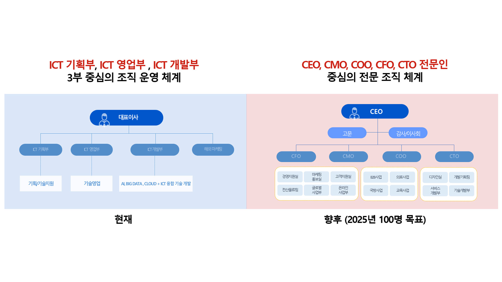

<?php
$first_page = "field";
$second_page = "organ";
?>

<div class="section">
	<?php include_once("inc/sub_loc2.php");?>
	<?php include_once("inc/sub_menu.php");?>
	<div id="page_wrap">
		<div id="org">
			<h3 class="stit"><b>ORGANIZATION CHART</b></h3>
			<div class="org_box"></div>
		</div>
	</div>
</div>